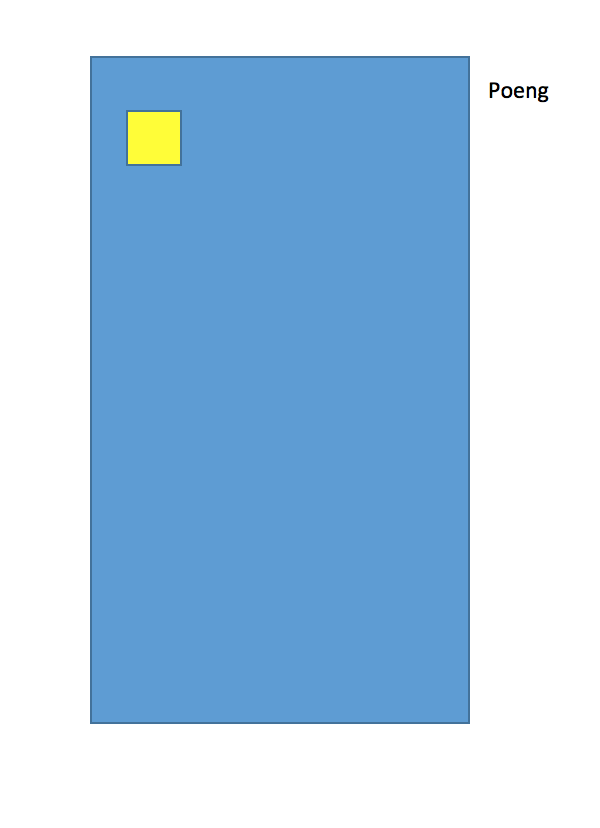

Tetris
Planlegging
Kravspesifikasjon
Overordna beskrivelse
Vi skal lage et spill --> TetrisI tetris skal tetrominoer falle ned fra himmelen og stables. Dersom en linje (som er 10 ruter bred) er helt full --> da skal den slettes og alle brikker (hver tetromino består av fire brikker) på linja skal fjernes.
For hver linje får du ett poeng, men dersom du fyller flere med en brikke så får du 2,4,8 for de andre linjene (utover den første).
Kravliste
- Vi skal ha tetrominoene IOJLTSZT
- Hver tetromino skal ha sin distinkte farge
- Poengviser oppe til høyre
- Forhåndsvisning av neste brikke
- Spillet er over når neste brikke ikke får plass
- Hastigheten skal øke for hver 10 linje
Design og utforming
Beskrivelse
Tetris skal vises som et brett på 10 ruter i bredden og 20 i høyden.- 0 Firkanten skal være gul
- I linja lysblå
- S skal være grønn
- Z skal være rød
- L er orange
- J er blå
- T skal være lilla
Wireframe
Systemspesifikasjon
Pseudokode
OPPSTART
generer alle tetrominoene (IOJLTSZT)
lag brett (10x20)
velg en start-brikke (en av IOJLTSZT)
plasser brikken på brettet
start spill-motoren (setInterval)
legg inn eventlistener på taster
(trengs av brukerkommandoer)
SPILLMOTOR
utfør brukerkommandoer
flytt brikken ned
sjekk kollisjon